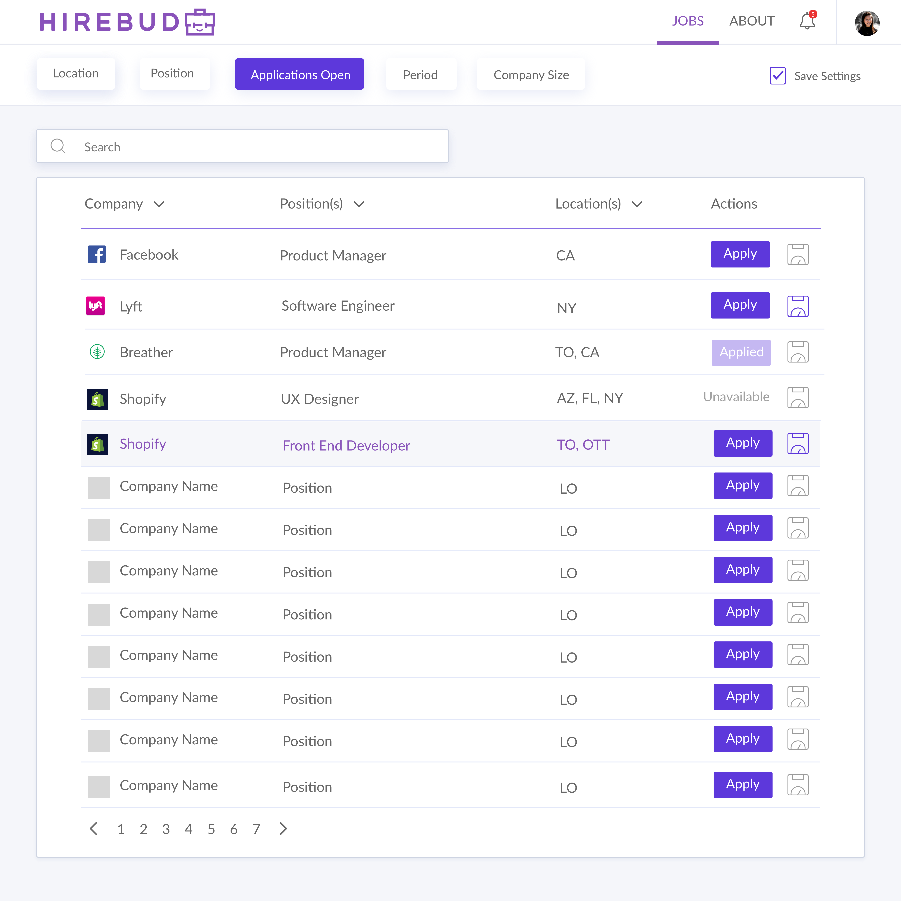
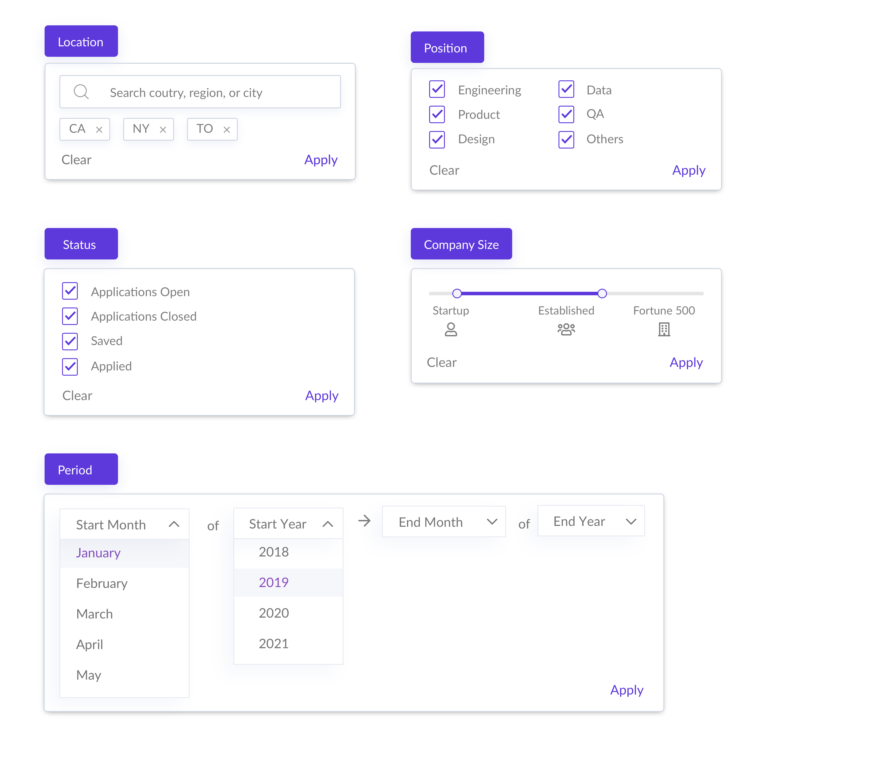

Hirebud
UI/UX Passion Project | Summer 2018
INTRO
Problem/Challenge.
Students starting out in their tech career with little experience have a difficult time discovering tech companies to apply to. Since knowing what companies and positions are out there is the first step on the application process, this is a pain point is an important one to address.
The challenge is to design a platform for students to easily discover tech internship positions at tech companies, and keep track of their application process.
My Approach.
Although I was tempted to jump into sketching and wireframing given the short amount of time I had to work on this project, in order to come up with the best design for a consumer facing product like this one, I had to first understand:
- What problem are users currently facing
- Why are current platforms not working well
- How can I fit into the desired product-market?
- Research
- Testing
- Setting the stage
- Designs
- Final considerations
Goals.
The goal is to design a simple web app that focused on:
- Reducing complexity — Limit the number of actions on each component and steps in the user’s workflow.
- Balancing UI and UX — Not everything needs crazy visuals and animations. Although I wanted pleasing visuals, I was primarily concerned with intuitive workflows and UX.
RESEARCH
User Research.
Although I knew I wanted to make this platform for tech internships, it didn’t necessarily mean only one user type fit into those needs. While thinking of the possible user problems, I began developing some questions I needed to learn from users. For example, I wondered how users are currently looking for tech internships and if they’ve developed workarounds. I also wondered what they valued most in a job (e.g. location, size, experience, pay, etc.). I decided to conduct extensive interviews on 10 of my colleagues and friends who are in the tech space currently in an internship.
Here’s what I discovered:
- Found very little success cold-applying online, usually needed an referral or “in” from friend/connection that works/worked at the company
- Current workflow is: hear about a job from a friend → search up LinkedIn recruiter → send recruiter an email to start application process
- Pay doesn’t matter as much as experience but if the opportunity came, would still choose to work at a “big name” rather than a startup
- Manually tracked process of process on whiteboard or paper
Although I was used to creating personas, I wanted to look into user needs from a Jobs-to-be-Done framework, and finding what users would “hire” my product to do. Therefore, instead of having various personas in specific user segments that ranges from a computer science student to a business grad that’s looking to switch careers, I created a focus point with the job-to-be-done:
To know which companies are out there and if they are currently hiring in a specific position.
Competitive Analysis.

I did an in depth review of the current market leaders in finding internships: LinkedIn, Glassdoor, Internships.com, Indeed, Intern.supply, and AngelList.
To summarize findings:
- Most of these platforms were black holes of information. There are pages of postings that are both relevant and irrelevant in every parameter. Users can be immediately overwhelmed by the amount of information presented to them and build up an expected behaviour of ignoring more of the information that they don’t need.
- Things become outdated. As soon as these platforms depend on companies to update the postings, or pulling data with queries that aren’t filtered out, information becomes outdated and applications that are no longer open gets linked to forms that no longer exist. And with that many postings, no wonder they can’t keep up.
- Pain point: many internships do not explicitly post for a certain time period and there’s no good way of filtering by the internship period.
Hierarchical Task Analysis.
I conducted a hierarchical task analysis to better understand and map out how users might go about the process of finding an internship broken down into its simplest steps.
SETUP
Workflow.
Knowing one of the major pain points of existing platforms is the amount of clutter and almost overwhelming amount of information on each page, I wanted to reduce that to a minimal experience. Although there are benefits of having everything on one page (filters, list of jobs, job descriptions, apply buttons, etc.) the way that most existing platforms have, I saw greater benefit in grouping actions and splitting them up, so that a user has a limited number of actions on each clear and it’s clear when to move on to the next page to perform another “group” of actions.
Sketches.
I focused on layouts and hierarchy of information when planning my sketches. I wanted information to be presented left to right in order of importance and users can get all the information they need at a glance and have a decision of what action to perform next when action buttons presented themselves. I also focused on limiting at-a-glance information to reduce complexity and confusion. This included hiding filters and carefully choosing what’s most important to the user and only display that.
DESIGN
Visuals.
I chose purple as the primary theme colour because it “combines the calm stability of blue and the fierce energy of red”, and is often associated with ambition. Since green and red will be used for success and failure, and blue for information, purple was the colour that best contrasted the standardardized colours and was still highly accessible.
I drew inspiration from Dropbox design by finding simple ways of dealing problems without any distractions. I also opted for a clean almost minimal look without taking away from necessary information and options, you can see this in the spacing of components and simplicity of the decision-making process for users.
I hyper-analyzed iconography to be friendly, welcoming, and contrast existing platforms by being “young and relevant”.
Final Wireframes.
After refining sketches, finalizing scope/feature set and putting my ideas on the computer, here are the results.
Onboarding/Landing page

Jobs Dashboard
Jobs Dashboard - The Details
Company & Position Profile